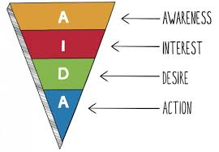

Intro til AIDA modellen og de fem nyhedskriterier.
AIDA modellen
Attention – Interest – Desire – Action –. Bliver brugt i sammenhæng med reklamer, fx når man skal reklamere sit produkt. Den bliver brugt til at anslysere og fortolke.

De fem kriterier
Aktualitet, væsentlighed, konflikt, identifikation og sensation